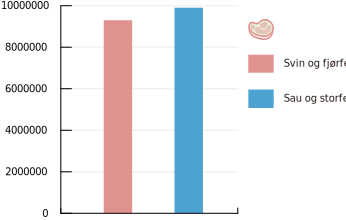
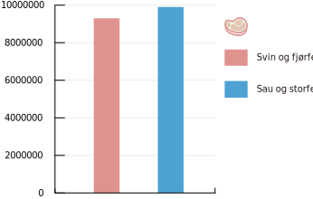
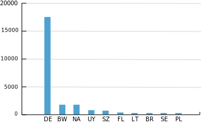
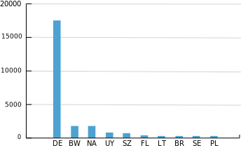

Sju myter om kjøtt
Er det solidarisk å øke kjøttproduksjonen i Norge? Trenger kulturlandskapet flere beitedyr? Er den norske kua så klimavennlig som tilhengerne vil ha det til? Vi har sett på de viktigste mytene om norsk kjøttproduksjon.
Av Håkon Lindahl | 01-02-2016
OPPDATERT 21. juni 2017
Nedgang i produksjon og forbruk av kjøtt, spesielt av rødt kjøtt, er en stor fordel for både miljøet og folkehelsa. I 2015 stagnerte kjøttforbruket. I en undersøkelse Respons Analyse gjennomførte for Framtiden i våre hender i juni 2017, svarte 43 prosent at de kan tenke seg å redusere kjøttforbruket av hensyn til miljø og dyrevelferd.
Men skepsisen til vegetarmat er fortsatt stor, og kjøttbransjen jobber hardt for å opprettholde inntrykket av at kjøtt er sunt og miljøvennlig. Men holder argumentene? Svaret er stort sett nei. Her er 7 vanlige myter om kjøtt.
myte 1:
Kjøttproduksjon skader ikke miljøet
FEIL: Husdyrhold gir like store klimagassutslipp som all transport, og belaster miljøet på andre måter også.
Rapporten Tackling Climate Change through Livestock
(FNs mat- og landbruksorganisasjon FAO, 2013) viser at 14,5 prosent av de globale menneskeskapte klimagassutslippene skyldes husdyrhold. Det er omtrent like mye som FNs klimapanel anslår at hele den globale transportsektoren, inkludert all vare og persontransport, slipper ut.En kilo biff krever mer enn 15 ganger så stort jordbruksareal som en kilo korn. Hadde vi spist mer plantekost og mindre kjøtt, kunne vi produsert like mange kalorier på et mindre område. Det ville ført til mindre avskoging, mindre bruk av miljøfarlige sprøytemidler og lavere klimagassutslipp.
Kjøttproduksjon er ikke den viktigste enkeltkilden til klimagassutslipp i Norge, men utslippene er langt fra ubetydelige. Jordbruket stod for 8,3 prosent av norske klimagassutslipp i 2014, og er den fjerde største utslippskilden. Av dette utgjorde metanutslipp fra husdyras fordøyelse omtrent halvparten.
I tillegg kommer utslipp fra bl.a produksjon av fôret, som ikke syns så godt i norske utslippsregnskap siden rundt halvparten av fôrråvarene er importert.
Til sammenligning står hele personbilparken for om lag 9,5 prosent 10,4 prosent av Norges klimagassutslipp. Norge har iverksatt mange tiltak for å få utslippene fra personbiler ned, blant annet miljøavgifter på drivstoff og lavere kjøpsavgift for nullutslippsbiler.
I jordbruket er det motsatt: Staten subsidierer systematisk den minst klimavennlige produksjonen. Matkornproduksjon mottar lite støtte, mens ren kjøttproduksjon fra storfe (ammekuproduksjon), som er den mest klimaskadelige kjøttproduksjonen, mottar svært mye.
Støtteordninger og klimagassutslipp fra norske jordbruksprodukter
(Kilde: Grønn skattekommisjon)
Nei, kua er ikke klimanøytral
Et argument som rett som det er brukes for norske beitedyr, er at eng og beitemark binder store mengder karbon som ikke inkluderes i de offisielle klimaregnskapene. De som går lengst, som Allan Savory, hevder til og med at beitedyr er selve klimaløsningen. Savory mener at jord, med rette beiteteknikker, kan binde så mye karbon at CO2-nivåene i atmosfæren kan bringes ned til førindustrielt nivå.

Men hvor mye karbon kan egentlig norsk beitemark binde? Ifølge Bioforsk (nå NIBIO) binder norske grasarealer i snitt rundt 2 kilo karbon per dekar per år. Det tilsvarer om lag 7,3 kilo CO2. Norge har til sammen rundt 6,5 millioner dekar eng- og beitearealer.
Gitt en gjennomsnittlig karbonbinding på 7,3 kilo CO2 per dekar, binder dermed norsk beitemark omtrent 48.000 tonn CO2 hvert år. Til sammenligning slipper husdyr ut omtrent 2,4 millioner tonn CO2-ekvivalenter, i form av metan, gjennom fordøyelsen hvert år.
Karbonbindingen i eng- og beitearealet samlet utgjør altså:
- 2 prosent av metanutslippene fra de samme husdyra som spiser graset som skal binde karbon, og
- 0,9 promille av de samlede norske klimagassutslippene.

Bedre beitemetoder kan øke karbonbindingen fra beite noe. Nibio erkjenner at vi vet for lite om karbonbinding i eng og beitemark, og forsker for å finne ut mer. Men det er lite som tyder på at karbonbinding i eng og beitemark kan bidra nevneverdig til å kutte norske klimagassutslipp, enda mindre som tyder på at karbonbindingen kan kompensere for metanutslippene fra husdyr, og ingenting som indikerer at beiting kan kompensere for de enorme menneskeskapte klimagassutslippene fra forbrenning av fossil energi.
myte 2:
Vi TRENGER kjøtt!
FEIL: Godt sammensatt vegetarkost gir deg alle næringsstoffer du trenger, og kan forebygge en rekke livsstilssykdommer. De som hevder nordmenn bør spise mer rødt kjøtt, er på kollisjonskurs med helsefaglige råd i Norge og andre land.
Det er fullt mulig å spise sunt både med og uten kjøtt i kosten. Helsedirektoratets hovedanbefaling er at vi bør spise mindre rødt og bearbeidet kjøtt, og mer grønnsaker. De skriver imidlertid også at godt sammensatt vegetarkost er ernæringsmessig fullverdig og kan ha positive helseeffekter med tanke på forebygging og behandling av flere sykdommer.
Hva med proteinene, da? Ikke noe problem. Hvis profesjonelle kroppsbyggere klarer seg uten kjøtt, gjør sannsynligvis du og jeg det også.
Enkelte forskere har uttrykt bekymring for at lavere kjøttforbruk kan føre til dårligere folkehelse. Hovedargumentet er at kjøtt inneholder mange viktige næringsstoffer som det er vanskelig å få i seg på andre måter.
Men offisielle kostholdsråd slår fast nordmenn maksimalt bør spise maksimalt 500 gram rødt kjøtt per uke. 55 prosent av norske menn og 33 prosent av norske kvinner spiser mer enn det . Konsekvensen er blant annet økt risiko for tykktarmskreft. Det internasjonale kreftforskningsinstituttet IARC har plassert rødt kjøtt i kategori 2A, som betyr “sannsynligvis kreftfremkallende for mennesker”.
myte 3:
Vegetarmat med soya er verre for miljøet enn kjøtt, fordi soyadyrking ødelegger regnskogen
DELVIS FEIL: Soyaen som brukes i vegetarmat, er som regel produsert i Europa og USA – ikke i regnskogsområder i Brasil.
En del kjøtterstatninger er basert på soya. En del argumenterer for at det er et dårligere miljøalternativ enn kjøtt, fordi soyadyrking kan gå ut over regnskogen.
Det er ingen tvil om at soyadyrking har alvorlige miljøkonsekvenser, spesielt i Brasil. Soyadyrkingen fører til at savannen avskoges og lokalbefolkningen fordrives. Den omfattende sprøytemiddelbruken har ført til alvorlige skader på plantasjearbeidere.
Betyr det at vi ikke bør spise soya? Nei. Det er ikke soyabønnene i seg selv som er problemet, men produksjonsvolumene og måten de dyrkes på. Om lag 75 prosent av de globale soyaavlingene går til dyrefôr, og nesten all soyaen som norske husdyr spiser, kommer fra Brasil.
Soyaen som brukes i vegetarmat, derimot, kommer som regel fra andre land. Meatish, som produseres av Nortura og selges i REMA-butikker, er basert på nord-amerikansk soya. Det samme er Oumph! (Meny og Kiwi). Anamma er basert på soya fra Europa og USA.
Den gamle vegetartraveren Hälsans Kök bruker imidlertid brasiliansk soya.
Det fins dessuten mange kjøttalternativer som ikke inneholder soya, for eksempel Hoffs vegetarburgere og Coops vegetarserie.
myte 4:
Norge må produsere mer kjøtt, og særlig rødt kjøtt, for å fø en voksende befolkning
FEIL: Siden norske beitedyr spiser svært mye kraftfôr, bidrar de til at den norske selvforsyningsgraden er lavere enn den ville vært med lavere kjøttproduksjon.
Mange argumenterer for at Norge bør satse mer på beitedyr av hensyn til matsikkerheten, siden Norge bare har 3 prosent jordbruksareal og mye grasmark.
Det hadde vært et poeng hvis norske drøvtyggere bare hadde levd på gras. Det gjør de ikke: norske kyr og sauer spiser mer kraftfôr enn kylling og svin til sammen, på tross av at Norge produserer om lag dobbelt så mye kylling- og svinekjøtt som sau- og storfekjøtt. Kraftfôret består hovedsakelig av korn og belgvekster som mennesker kunne spist direkte.
Regnestykket går ikke opp selv om vi inkluderer melka. Målt i kalorier spiser norske drøvtyggere nesten dobbelt så mange kalorier i form av kraftfôr – som består av mat som mennesker kunne spist – som de produserer i form av kjøtt og melk.
Faktum er at Norge kunne økt selvforsyningsgraden kraftig ved å produsere mindre kjøtt og mer korn. Å øke kjøttproduksjonen for å fø en voksende befolkning er meningsløst med dagens fôrregime.
En endring av beitedyras kost fra kraftfôr til grovfôr (gras) vil gjøre at beitedyra kommer bedre ut av ressursregnskapet, men da vil klimagassutslippene per kilo kjøtt til gjengjeld gå kraftig opp. Intensivt husdyrhold (mye kraftfôr, lite grovfôr) gir lavere klimagassutslipp enn ekstensivt. Å produsere mindre kjøtt og mer plantekost er en bedre løsning både i ressurs- og klimaregnskapet.
Salg av kraftfôr til husdyr, 2014
(Kilde: Landbruksdirektoratet)
 

myte 5:
Hvis vi blir flinkere til å spise hele dyret , kan vi redusere kjøttproduksjonen
FEIL: De kjøttstykkene vi ikke spiser i hel tilstand, spiser vi som pølser og kjøttdeig.
En del kokker og matskribenter mener det er dårlig ressursutnyttelse å bare spise de “beste” delene på dyret, som biffen. Argumentet er omtrent som følger: Hadde vi spist mer av stykningsdeler som nakke, bog og høyrygg, ville vi utnyttet dyret bedre. Dermed kunne vi redusert kjøttproduksjonen.
Men er det riktig? Nei. Vi har alltid spist “hele dyret” i Norge. Det er bare det at vi ikke har spist dem som helt kjøtt, men som kjøttdeig og pølser. Ifølge Nortura har alltid alt kjøttet blitt utnyttet ved deres anlegg, uavhengig av hvilke stykningsdeler forbrukerne foretrekker.
Er det da noen fordeler ved å spise uvanlige stykningsdeler? Kanskje. Det øker verdien på kjøttet for bøndene, slik at de i mindre grad presses til høyest mulig produksjon. Ubearbeidet kjøtt er sannsyligvis sunnere enn bearbeidet. Men at kjøttproduksjonen automatisk reduseres av å spise mer høyrygg og mindre indrefilet, er rett og slett feil.
myte 6:
Norge trenger mange beitedyr for å opprettholde kulturlandskapet
DELVIS FEIL: Opprettholdelse av kulturlandskapet påvirkes først og fremst av jordbrukspolitikk, ikke av antall beitedyr.
Mange argumenterer for at Norge er avhengige av mange beitedyr er viktige for å opprettholde kulturlandskapet. Men vedlikehold av kulturlandskap handler ikke først og fremst om antall beitedyr, men om hvordan jordbruket drives. Det fins flere sau og storfe i Norge nå enn det gjorde på 60-tallet. I samme periode har gjengroingen av kulturlandskapet vært dramatisk. Den viktigste årsaken er intensivering av husdyrholdet, med mindre beite og mer kraftfôr.
Kulturlandskapet kan være et argument for mindre intensivt husdyrhold, med mer beiting og mindre kraftfôr. Men å øke antall beitedyr i Norge vil neppe ha noen stor effekt på kulturlandskapet så lenge landbrukspolitikken favoriserer intensiv drift.
Antall sauer og storfe i Norge, 1961 - 2014
Det er flere sauer og storfe i Norge nå enn på 60-tallet
(Kilde: FAOSTAT)
myte 7:
Norsk storfekjøtt er mer klimavennlig enn importert
DELVIS FEIL: Det meste av storfekjøttet vi importerer kommer fra Tyskland, der produksjonen er omtrent like (lite) klimavennlig som den norske.
Ifølge FAOs rapport Tackling Climate Change through Livestock fra 2013, er vesteuropeisk storfekjøttproduksjon gjennomgående mer klimavennlig enn kjøttproduksjon i blant annet Sør-Amerika og Afrika. Norske bønder ser det som et argument for å øke norsk storfekjøttproduksjon.
Den relative klimavennligheten skyldes to faktorer:
Samtidig kan industrialisert storfeproduksjon gi andre problemer, som lokale utslipp, dårlig dyrehelse og dyrevelferd og press på ferskvannsressurser.
Norge importerer mest storfe fra Tyskland, som har en mer industrialisert storfeproduksjon enn Norge, med langt flere dyr per gård. Det er liten grunn til å tro at klimagassutslippene fra tysk storfe er høyere enn fra norske.
Vi importerer også en del storfekjøtt fra Botswana og Uruguay, som sannsynligvis har høyere klimagassutslipp per kilo kjøtt enn det norske. Til gjengjeld spiser de importerte kyrne derfra mer gras og mindre menneskemat. Verre for klimaet, men bedre for matsikkerheten.
Hva med utslippene fra transporten til Norge? De utgjør forsvinnende lite av totalen, og har lite å si for hvor klimavennlig kjøttet er. 97 prosent av klimagassutslippene i husdyrhold skjer før det slakteklare dyret forlater gården. De resterende 3 prosentene er fordelt mellom videreforedling og transport.
Storfekjøtt kan vanskelig bli klimavennlig, uansett produksjonsform og produksjonsland. Utslippene er langt høyere enn for alle matvarer som ernæringsmessig kan erstatte storfekjøtt, som korn, linser og belgvekster.
Import av storfekjøtt, 2015. Tonn.
(Vi importerte 3 ganger så mye kjøtt fra Tyskland som fra de 9 andre topp 10-importlandene til sammen
Kilde: Statistisk sentralbyrå)
 
